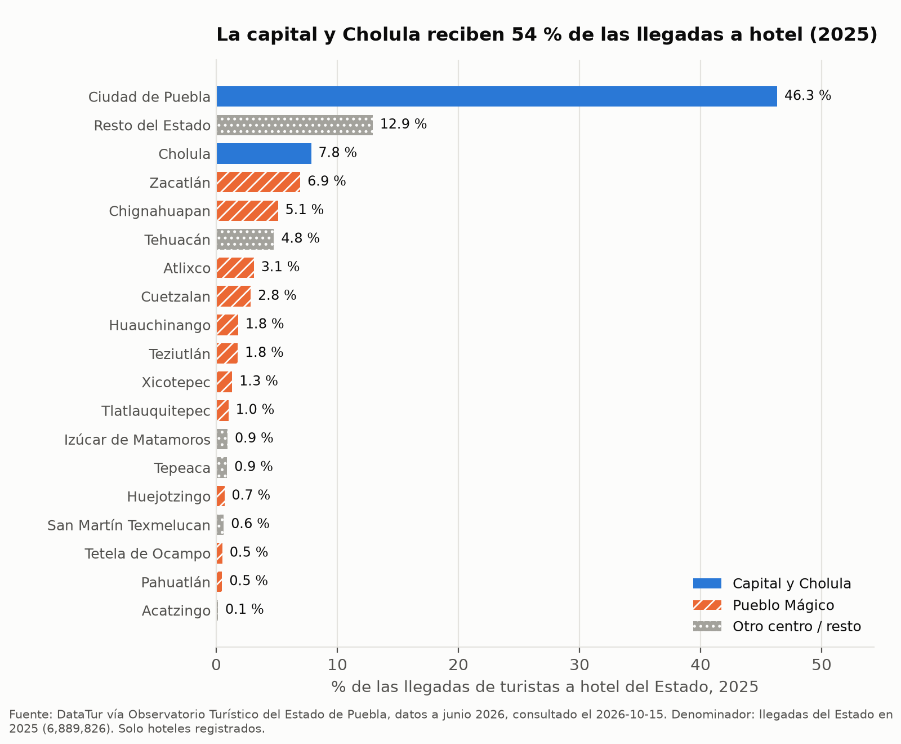
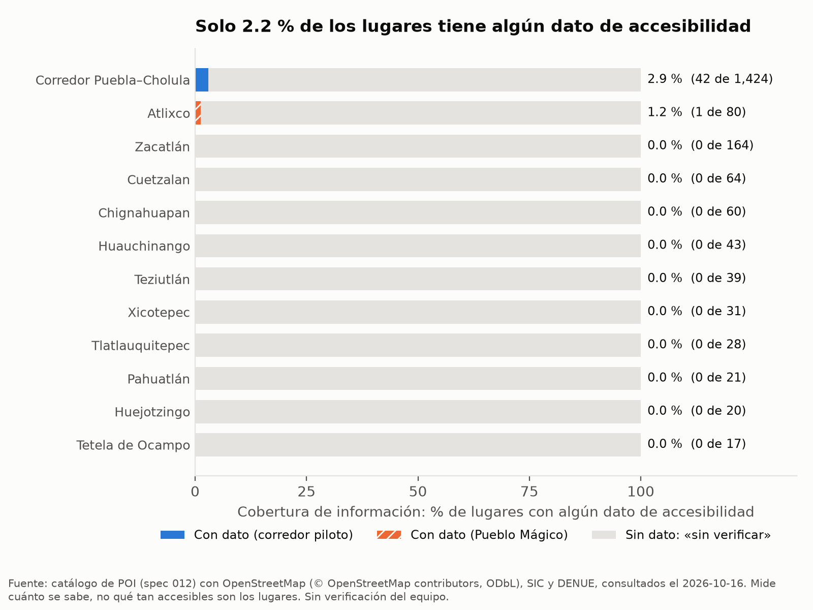

Puebla Viva 360
Experiencias turísticas inclusivas para las personas.
Inteligencia accionable para los destinos.
El turismo se concentra en dos polos y el resto del estado no se ve

Fuente: DataTur vía Observatorio Turístico del Estado de Puebla, datos a junio de 2026; DENUE (INEGI) y Sistema de Información Cultural. Llegadas medidas en hoteles registrados.
Quien viaja con una necesidad de movilidad planea a ciegas

Fuente: OpenStreetMap (© OpenStreetMap contributors), SIC y DENUE, consultados el 2026-10-16. Mide cuánta información existe, no qué tan accesibles son los lugares.
Un mismo dato sirve al visitante y a la Secretaría
Rutas que respetan sus necesidades: sin escalones, con descansos, bajo costo.
Por qué recomienda cada lugar y qué datos no sabe.
El visitante señala una barrera real, con su consentimiento.
La Secretaría ve la brecha agregada y prioriza dónde intervenir.
La ficha se corrige y la siguiente ruta ya lo considera.
PWA para el visitante · Tablero para la Secretaría · Nadie es vigilado: solo agregados.
Fuentes públicas, integradas y trazables
INEGI (DENUE y Marco Geoestadístico) · Secretaría de Cultura (SIC) · OpenStreetMap · Observatorio Turístico. Cada fuente con URL, fecha y huella SHA-256; todo se regenera con un comando.
Un recomendador que nunca rompe una restricción de accesibilidad
| Método (40 perfiles, catálogo real) | Violaciones de restricciones indispensables |
|---|---|
| Puebla Viva 360 | 0 |
| Recomendar lo más popular | 219 |
| Recomendar lo más cercano | 237 |
Filtra con reglas duras, ordena por intereses, cercanía y diversidad territorial, secuencia la ruta con horarios y explica cada parada. Límite honesto: con tan poca información de accesibilidad, muchas rutas con restricciones quedan cortas. Eso es justo la brecha que hay que cerrar.
Evaluación reproducible con perfiles de solicitud sintéticos y verificador independiente del motor.
Listo para un piloto rumbo al Tianguis Turístico 2027
- Visitantes: personas con discapacidad, adultos mayores, familias y presupuestos bajos encuentran rutas confiables.
- Destinos: el recomendador lleva visitantes a Pueblos Mágicos con cuartos libres.
- Secretaría: sabe dónde poner una rampa, un baño o señalética, con evidencia y fuente.
- Escala: DENUE, INEGI, SIC, OpenStreetMap y DataTur cubren todo el país; el método se replica en cualquier destino.
Escanea y arma tu ruta por Puebla
puebla-viva-360.vercel.app
Visitante: / · Secretaría: /admin